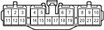

Наименование
Разъем распределительного блока
Код
R27
Каталожный номер
90980-11238
Цвет
Темно-серый
Технические характеристики
Жгуты проводов для ремонта

Расположение
Расположение деталей в кузове (для 3-дверных моделей с левосторонним рулевым управлением) 2
Расположение деталей в кузове (для 5-дверных моделей с левосторонним рулевым управлением) 2
Расположение деталей в кузове (для 3-дверных моделей моделей с правосторонним рулевым управлением) 2
Расположение деталей в кузове (для 5-дверных моделей моделей с правосторонним рулевым управлением) 2
Система
Система полного привода
A-TRC (для моделей с 1GR-FE, 1KD-FTV)
АБС (для моделей с 1GR-FE, 1KD-FTV)
АБС (для моделей с 2TR-FE, 5L-E)
Фонари заднего хода
Система Crawl (для моделей с 1GR-FE, 1KD-FTV)
Система двойной блокировки (для моделей с левосторонним рулевым управлением)
Система двойной блокировки (для моделей с правосторонним рулевым управлением)
Система помощи при спуске по склону (для моделей с 1GR-FE, 1KD-FTV)
Динамическая радарная система круиз-контроля (для моделей с 1GR-FE)
Динамическая радарная система круиз-контроля (для моделей с 1KD-FTV)
Механизм открывания защелки стекла
Точки соединения с массой
Система помощи при подъеме по склону (для моделей с 1GR-FE, 1KD-FTV)
Освещение
Переключатель выбора "Multi-Terrain" (для моделей с 1GR-FE, 1KD-FTV)
Заднее сиденье № 2 с электроприводом и функцией складывания
Блокировка заднего дифференциала
Задние противотуманные фонари
Система предупреждения о непристегнутом ремне безопасности
Стоп-сигналы
TRC (для моделей с 2TR-FE)
Задние фонари
Противоугонная система
Сцепное устройство для прицепа
VSC (для моделей с 1GR-FE, 1KD-FTV)
VSC (для моделей с 2TR-FE)
Система дистанционной блокировки дверей (для моделей без системы посадки и запуска)